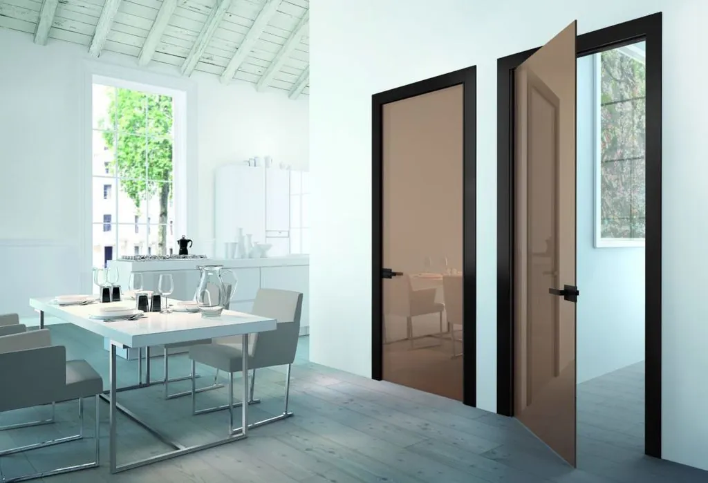

Стеклянные двери

Стеклянные двери – это элегантное решение для любого интерьера. Они создают ощущение простора и света, при этом выполняя функции обычных дверей. Компания ДизайнСтекло в Тольятти предлагает различные варианты стеклянных дверей, которые подчеркнут стиль вашего дома или офиса.
Основное содержание
Стеклянные двери могут быть выполнены в разных вариантах: распашные, раздвижные, маятниковые, в алюминиевом или стальном обрамлении. ДизайнСтекло предлагает двери из закалённого стекла, которые обладают высокой прочностью и долговечностью.
Мы создаём двери с индивидуальным дизайном, предлагая варианты с матовым стеклом, с декоративной гравировкой, фотопечатью и другими дизайнерскими решениями. Такие двери подходят для различных помещений: от жилых до офисных и коммерческих.
Преимущества стеклянных дверей:
- Стильный внешний вид — идеально подходят для создания современного интерьера.
- Прочность — закалённое стекло обеспечивает высокую устойчивость к повреждениям.
- Функциональность — стеклянные двери могут быть выполнены в разных конструктивных вариантах.
- Простота в уходе — поверхность стекла легко моется и не требует сложного ухода.
Области применения:
- Офисы: стильные двери для переговорных комнат и рабочих зон.
- Квартиры и дома: использование в качестве дверей в спальни, ванные комнаты и другие помещения.
- Коммерческие помещения: создание стильных входных зон и внутренних пространств.
Вывод
Компания ДизайнСтекло предлагает качественные стеклянные двери, которые придадут вашему интерьеру современный и изысканный вид.